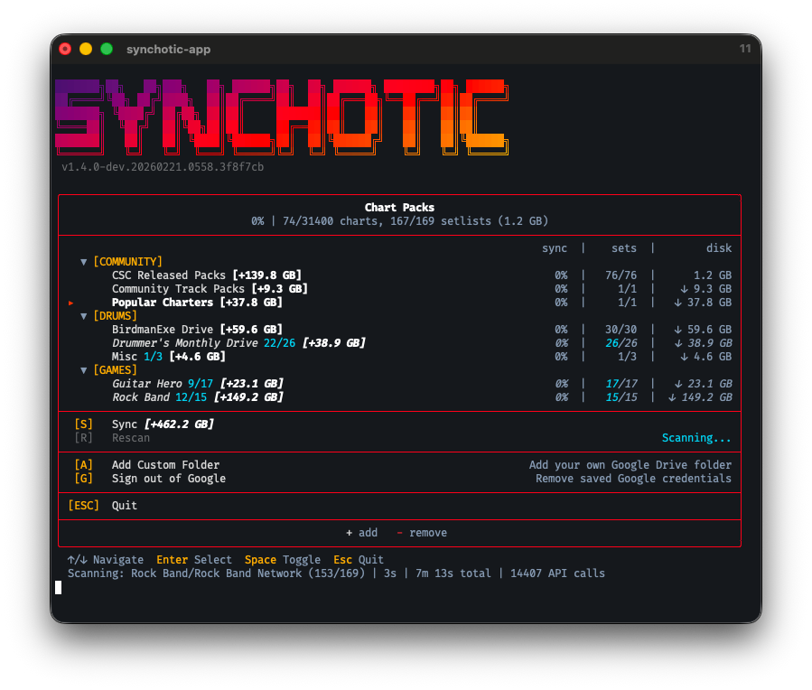

Synchotic
Clone Hero chart sync from Google Drive.
Synchotic keeps your Clone Hero songs folder in sync with shared Google Drive setlists. Pick which drives you want, hit sync, and it handles the rest: new charts get downloaded, updated charts get replaced, and anything you disabled gets cleaned out.

How to use it
- Grab the launcher and drop it in your Clone Hero songs folder.
- Open it up, enable the community drives you want.
- Optionally sign in with Google (faster downloads, uses your own API quota).
- Hit sync. Charts land in a
Sync Chartsfolder next to the launcher.
Google account access
Synchotic asks for read-only access to your Drive (drive.readonly). It only reads the shared drives you configure as sync sources. It doesn't touch your personal Drive files, and your OAuth token stays on your machine. The privacy policy has the full breakdown.